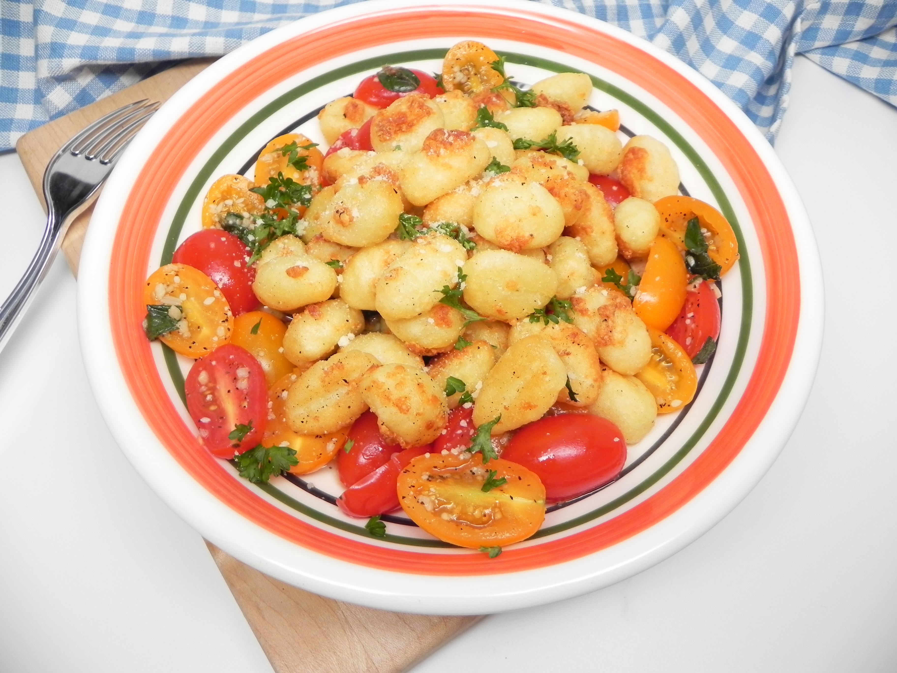

Gnocchi

Description
These hearty potato filled dumplings are great for those rainy and slow days! They can be fried, sauteed, or just boiled in water.
You can cook them in tomato sauce, olive oil, or without any toppings!
Ingredients
- 2 Potatoes
- 1 Egg
- 2 cups all-purpose flour
Steps
- Put the peeled potatoes into a boiling pot of salted water.
Cook the potatoes for around 15 minutes, they will be tender but still firm.
The potatoes must then be drained, cooled, and then mashed with a fork.
- Combine the mashed potato, 1 cup of flour and the egg in a large mixing bowl.
Knead the dough until it is a ball.
Shape the ball proportionately into long strips.
Flour your work surface, cut the strips into half-inch sized pieces.
- In a large pot, boil some salted water,
place the gnocchi in the pot for up to 5 minutes, until the pieces rise to the surface.
Drain and serve with your preferred toppings.